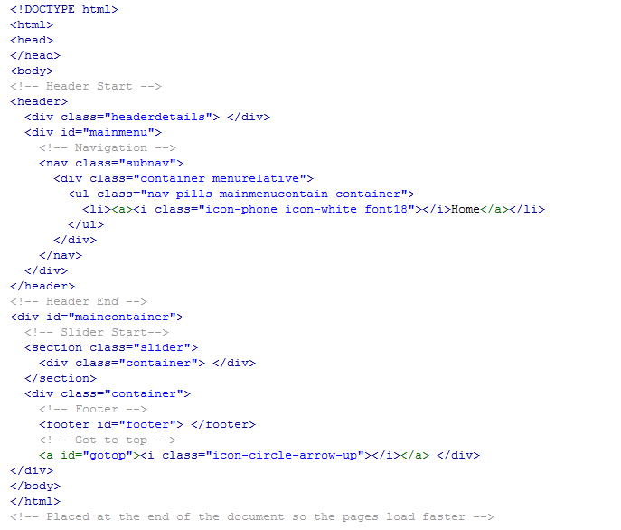

Created: October/30/2013
By: pxcreatetemplate
Email: pxcreate@yahoo.com
Thank you for purchasing our template. If you have any questions that are beyond the scope of this help file, please feel free to email via my user page contact form here Thanks so much!
You will get diffrent 12 folders named color1, color2... for 12 color variation .
If you don't want to set up twitter please comment twitter function from custom.js
open file
js/custom.js username: "pxcreate",username: "xyz",// modpath: 'catalog/view/theme/shopsimple/twitter/',modpath: 'catalog/view/theme/shopsimple/twitter/',open file
twitter/index.php replace it with yours. You can get all detials from here, https://dev.twitter.com/apps Login with your twitter ID & create Application.// Your Twitter App Consumer Key private $consumer_key = 'YOUR_CONSUMER_KEY';// Your Twitter App Consumer Secret private $consumer_secret = 'YOUR_CONSUMER_SECRET';// Your Twitter App Access Token private $user_token = 'YOUR_ACCESS_TOKEN';// Your Twitter App Access Token Secret private $user_secret = 'YOUR_ACCESS_TOKEN_SECRET';
Open html page [blog pages] Find
http://www.facebook.com/twitter Ex.. http://www.facebook.com/twitterOpen Custom.js Find
$('.flickr-feed').socialstream({same thing for pinterest & other social feed
$('.pinterest-feed').socialstream({ open email.php file
Find
$to = ""; $to ="test@test.com";//your email idThis theme is a Responisve layout for tablet & mobile device base on html5 structure & Twitter Bootstrap. The sidebar's content is within a div with an tag
I'm using two CSS files in this theme. The first style.css [main css] file. The second one bootstrap.css is default bootstrap.css. The third one bootstrap-responsive.css is to make site responsive, which is also default with twitter bootstrap
/* ------------ Header ------------ */
some code
/* ------------ Main Menu ------------ */
some code
/* ------------ Blog ------------ */
some code
/* ------------ Portfolio ------------ */
some code
/* ------------ Our Client ------------ */
some code
etc.
This theme include below files.
Credits
Once again, thank you so much for purchasing this theme. As I said at the beginning, I'd be glad to help you if you have any questions relating to this theme. No guarantees, but I'll do my best to assist. If you have a more general question relating to the themes on twitter, you might consider visiting the forums and asking your question in the "Item Discussion" section.
pxcreatetemplate
If you like theme please don't forget to rate us! :)